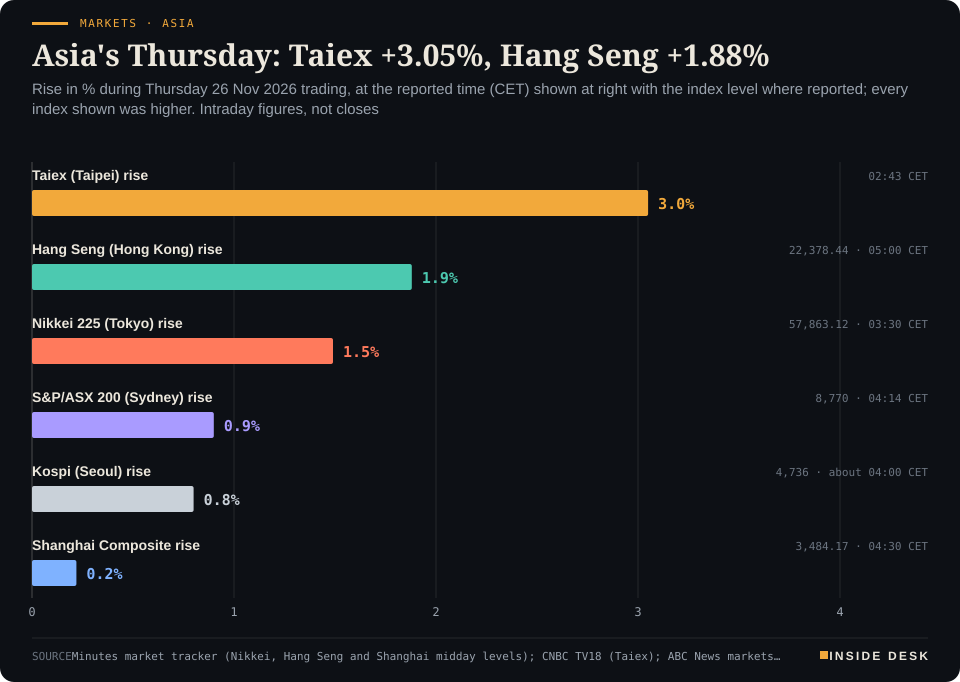
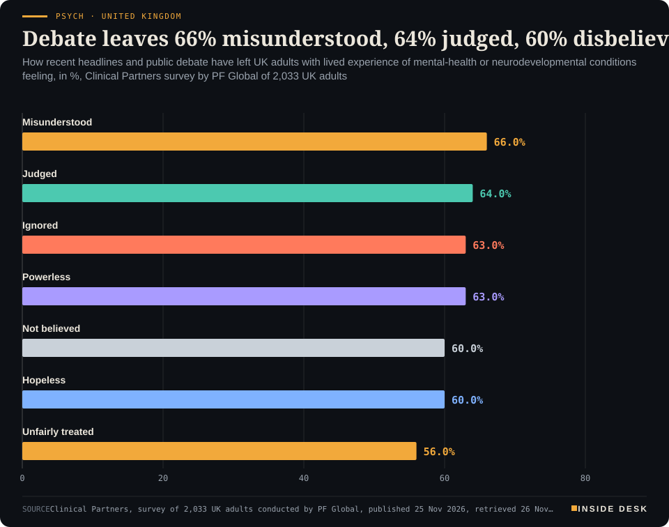
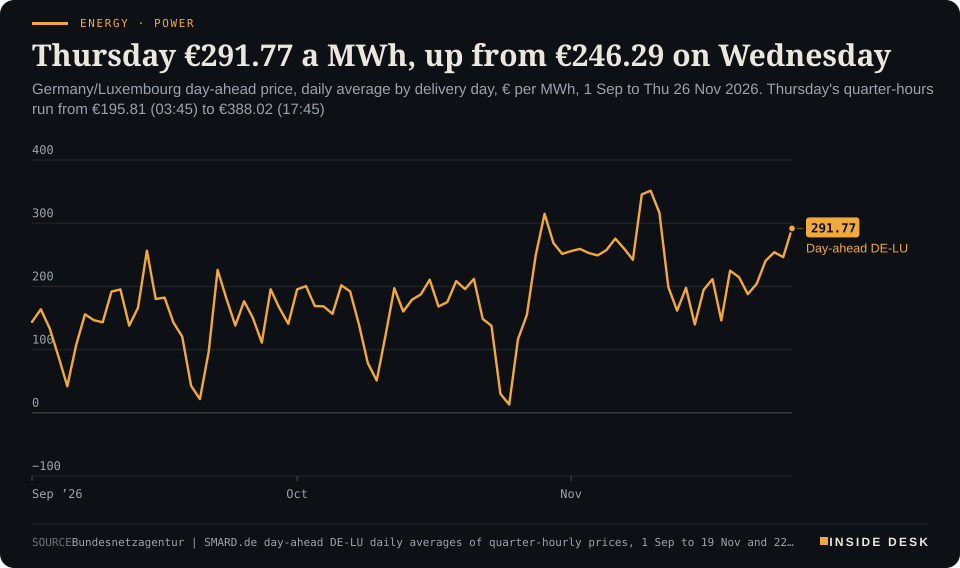
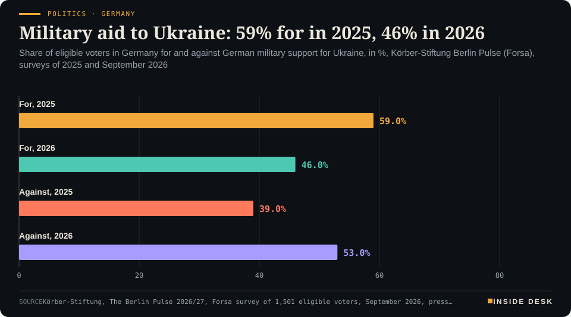

Inside Desk ePaper, Morning ePaper · Thu 26 Nov 2026
Thursday, 26 November 2026Always free
Inside Desk
Morning ePaperAvailable 06:31 CET · Berlin
Lead · Markets & Macro
The Dow erased an 1,100-point fall on Wednesday while the chips still closed lower. New York is shut today, Asia bought back what it sold, and Europe's calendar is all plumbing.
New York climbed out of a 1,100-point hole on thin pre-holiday trade and shuts for Thanksgiving today. Also: what Thursday's power price is made of, Asia answering the tariff drafts in three registers, a Fed that decides on October, a one-tablet gonorrhoea option, California's king tides, and a Podium vs Print on Ukraine aid.
New York climbed out of a 1,100-point hole on thin pre-holiday trade and shuts for Thanksgiving today. Also: what Thursday's power price is made of, Asia answering the tariff drafts in three registers, a Fed that decides on October, a one-tablet gonorrhoea option, California's king tides, and a Podium vs Print on Ukraine aid.
11 edition pieces · 11 desks · Available 06:31 CET, 26 November 2026
22 ePaper extras, added , 26 November. They appear only in the ePaper and carry their own time.
The website edition follows at 08:30.
The ePaper rhythm
06:30 Morning ePaper (website edition at 08:30)
18:30 Evening ePaper, updated live until 22:30 with an “Updated” time and a Latest page
Sun 10:00 The Sunday Magazine
Berlin time. Every issue is free.
How to read it
Swipe, use the arrow keys or the page strip. Tap any headline for the reading view. Press / to search, t for contents, +/− to zoom. Download the PDF.
LeadInside Desk · Morning ePaper26 November 2026
Markets & Macro · Lead · 3 min
The Dow erased an 1,100-point fall on Wednesday while the chips still closed lower. New York is shut today, Asia bought back what it sold, and Europe's calendar is all plumbing.
At its worst on Wednesday the Dow Jones Industrial Average was down more than 1,100 points, or 2.2%. At the bell it was up 164.25 points, or 0.33%, at 50,182.951. The Nasdaq Composite, which had lost 4.6% at its low, closed down 0.62% at 23,585.80; the S&P 500, down 3.2% at one point, finished 0.25% lower at 7,182.781. That is the whole session in two lines. The rest is the argument about what it meant.
The drop had three ingredients, all in the open. October’s PCE price index rose 3.8% on a year earlier and core 3.3%, slightly above forecast, which CNBC said reinforced expectations of rate rises in December and January1. The White House unveiled new tariffs on more than a dozen trading partners, including China and the European Union1. And the AI trade kept unwinding: Nvidia fell almost 4%, Micron 4.5%, Oracle more than 5%, and Ambarella more than 19% after a light forecast1. At the low, MarketWatch reported, the Nasdaq 100 was exactly 20% below its October closing peak, the textbook line for a bear market2.
The recovery had less glamorous causes. Traders pointed to thin trading before the holiday and to a blog post in which Michael Burry said his portfolio was “temporarily almost entirely long”1. MarketWatch added that tech pared losses after reports that officials had told congressional staff there was no evidence the Chinese executive linked to Nvidia’s chief had been directed to spy on him2. Under the headline, the Dow was carried by IBM, Salesforce and Sherwin-Williams, and the S&P 500 by materials, energy and real estate1. One strategist told CNBC the market was “very bifurcated” and called it “a sentiment-based scare”, not a growth scare1. Another, at Wealthspire, listed Fed tightening, consumer stress and the AI outlook as the real concerns2. Both can be true. Paint makers and software sellers do not trade on the same story.
Today New York is closed for Thanksgiving, and Friday is a shortened session3. So Asia got the last word, and it chose to buy.
Markets · AsiaAsia's Thursday: Taiex +3.05%, Hang Seng +1.88%Rise in % during Thursday 26 Nov 2026 trading, at the reported time (CET) shown at right with the index level where reported; every index shown was higher. Intraday figures, not closes

Bar chart of Asian index rises during Thursday 26 November 2026 trading, every one higher: the Taiex up 3.05 percent at 02:43 CET, the Hang Seng up 1.88 percent at 22,378.44 at the 05:00 CET midday break, the Nikkei 225 up 1.49 percent at 57,863.12 at the 03:30 CET midday break, the S&P/ASX 200 up 0.90 percent at 8,770 at 04:14 CET, the Kospi up 0.80 percent at 4,736 at about 04:00 CET and the Shanghai Composite up 0.22 percent at 3,484.17 at the 04:30 CET midday break. These are intraday figures, not closes.
Source: Minutes market tracker (Nikkei, Hang Seng and Shanghai midday levels); CNBC TV18 (Taiex); ABC News markets blog (ASX 200); Handelsblatt (Kospi); retrieved 26 Nov 2026 · reported intraday figures · CSV
Geo-economicsInside Desk · Morning ePaper26 November 2026
Geo-economics · 2 min
A day after Washington's Section 301 proposals, Asia's governments did not retaliate. They filed comments, booked hearing slots and pointed at deals already signed.
On Thursday the answers came in from Asia, and they came in the dull language of procedure. Singapore said it was “very disappointed”, Japan called the proposed duties “regrettable”, South Korea asked for more talks, Vietnam pushed to close a trade deal and Taiwan said it was confident its agreed 15% would hold1. Nobody announced a counter-tariff.
Singapore’s Ministry of Energy, Trade and Industry said the findings ignored the structure of an open, market-oriented economy: “Singapore’s economic policies do not protect our domestic market or subsidise manufacturing for export”1. It will submit further comments during the consultation and urge the US trade office to reconsider; the proposal puts Singapore at up to 20%, with exemptions for some products1. Japan’s chief government spokesman Minoru Kihara said Japan “does not have any non-market policy practices or structural excess production capacity”1.
The more interesting answers were the practical ones. Vietnam said it would register for and attend the public hearing, tighten rules on forced labour, transshipment and origin fraud, and finish a reciprocal trade agreement “as soon as possible”1. Its capped rate would be 20% with a deal and could rise to 35% without one, Reuters reports1. India’s trade ministry said it had no structural excess capacity and wants the question settled in its bilateral talks; Greer said India’s 25% would be capped at 17% with a deal1. Thailand said its proposed rate of up to 18% was in line with earlier negotiations1.
Taiwan’s Vice Premier Cheng Li-chiun put it most plainly: “The US has one main goal, which is to rebuild the legal basis for its reciprocal tariff policy. It is not to change the content of the agreements themselves”1. China’s embassy in Washington said the “so-called issue of ‘industrial overcapacity’ does not really exist”, but stopped short of threatening retaliation and urged both sides to deliver on the Trump–Xi agreements1.
Geo-economics · Short item · ePaper extra, added
The Sovereign Tech Equity Fund is a promise of equity stakes in quantum, AI and chips, operational by 2028 at the latest.
Alongside its Quantum Act, the European Commission on Wednesday proposed a Sovereign Tech Equity Fund, STEF, meant to drive up to €50 billion of investment in quantum, AI and other technologies it calls critical to European sovereignty1,2. The design is seed capital: the Commission hopes to draw up to €6 of private money for every €1 of public money put in by member states, the European Investment Bank and itself1. It wants STEF running as soon as possible and by 2028 at the latest, when the next long-term EU budget starts1.
Geo-economics · Brief · ePaper extra, added
Of 47 critical components the Commission has identified for quantum technology, nine currently have no EU supplier at all, Euronews reports from Wednesday’s Quantum Act1. The Commission and member states would monitor supply chains to find critical suppliers, while public procurement stays tied to World Trade Organisation rules: non-EU firms may bid if they have a European-controlled presence and follow EU rules1. The act would also require member states to move to post-quantum cryptography by 2030 for high-risk areas such as critical infrastructure, and by 2035 for all other systems1. IBM’s Jean Marc Leclerc said Europe “should not have to choose” between its own capabilities and the best technology from abroad1. A parts list is less glamorous than a fund. It is usually more honest.
Markets & MacroInside Desk · Morning ePaper26 November 2026
Markets & Macro · Short item · ePaper extra, added
Tokyo bought back the names it had sold hardest. Taiwan's largest chipmaker barely moved.
The rebound in Asia on Thursday was not a tide that lifted everything. It was a list. SoftBank Group, one of OpenAI’s largest backers, was up 11.2% by Tokyo’s lunch break1. AFP named the memory maker Kioxia alongside it as the standouts, both up by double figures3. CNBC counted Advantest up 7.3%, Lasertec and Disco more than 6%, and Tokyo Electron 4.6%2. Handelsblatt noted that the two biggest winners were among the names that had fallen deepest in the slide1.
In Seoul, SK Hynix rose more than 4% and Samsung Electronics 2.1%, according to CNBC2. In Taipei, by contrast, Taiwan Semiconductor Manufacturing traded at the previous day’s level1, even as the Taiex rose.
Two pieces of news that might have mattered did not, at least by midday. Handelsblatt reported that S&P Global’s threat to downgrade Nvidia’s credit rating after its leadership turmoil left Asian investors cold, and that Washington’s new tariff plans for Japan, South Korea and Taiwan were barely a topic1. A strategist at Resona Bank, quoted via the Nikkei newspaper, said the heavy sellers appeared to have withdrawn1.
The lesson is in the shape, not the size. Money returned first to the stocks that had fallen most, not to the one company that sits under the whole AI build-out. That is what short-covering and bargain-hunting look like. Whether it is more than that, Friday’s short session in New York will begin to say.
Nothing here is investment advice.
Markets & Macro · Brief · ePaper extra, added
Asian shares “eked out a rare rally” on Thursday, ABC News reported with Reuters, with Japan’s Nikkei up 1.6% and South Korea’s Kospi up 1.9% at the time1. Now the context. For November, Japan was down 8%, South Korea had shed 16% and Taiwan’s main index 15%; Asia-Pacific shares outside Japan were still off 9% for the month1. Seoul’s Wednesday alone had cost 6.16% before Thursday’s partial recovery, by the Minutes market tracker’s close data2. A day’s gain of under 2% against a month’s loss of 16% is a rest, not a reversal. You do not judge a ledger by its last entry. Nothing here is investment advice.
Politics & InstitutionsInside Desk · Morning ePaper26 November 2026
Politics & Institutions · Podium vs Print · 2 min
The chancellor told the Bundestag that helping Ukraine protects Germany. Two days earlier a survey found the country split almost exactly in half on that very sentence.
Podium
“Denn mit der Unterstützung der Ukraine unterstützen und schützen wir uns auch selbst.”
Chancellor Friedrich Merz, in the Bundestag general debate on the 2027 budget, 25 November 2026
Print50% against 48%
Half of the population (50%) agrees that Ukraine, in defending itself against Russia, also protects the security of Germany and Europe; the other half (48%) does not. Support for German military aid to Ukraine fell to 46% from 59% a year earlier; 53% are against it.
Körber-Stiftung, The Berlin Pulse 2026/27 (Forsa, 1,501 eligible voters, September 2026), 24 November 2026
The podium. In Wednesday’s general debate on the 2027 budget, which carries around €12 billion in aid for Ukraine, Friedrich Merz asked the question many voters ask: are we spending too much on Ukraine’s defence?1 His answer: “Aber es geht hier, meine Damen und Herren, nicht allein um die Ukraine, es geht eben auch um unsere Freiheit. Denn mit der Unterstützung der Ukraine unterstützen und schützen wir uns auch selbst.”1 He went on to describe Russian escalation in the Baltic, in Poland, on the Black Sea and in Germany1. Earlier he had said “Russland will mehr als die Ukraine”3.
The print. Körber-Stiftung’s annual Berlin Pulse survey, carried out by Forsa in September among 1,501 eligible voters and published on Monday, put that exact proposition to the public. Half (50%) agree that Ukraine, by defending itself, also protects the security of Germany and Europe; 48% do not2. German military support for Ukraine “findet keine Mehrheit mehr”: 46% in favour, down from 59% a year earlier, and 53% against, up from 39%2. At the same time 82% still see Russia as a military threat2.
Politics & Institutions · Short item · ePaper extra, added
Gas storage, diesel, border crossings and trains: the Magyar–Zelensky meeting was about the plumbing of a relationship.
Péter Magyar’s trip to Transcarpathia on Tuesday was the first visit to Ukraine by a sitting Hungarian prime minister since 2015, the Kyiv Post reports1. It produced no grand declaration. It produced a list: gas and diesel supplies to Ukraine, Hungarian companies’ use of Ukrainian gas storage, rebuilt and new border crossings, and direct trains on new routes1. Humanitarian demining was also discussed; the UN estimates more than 1 million mines and pieces of unexploded ordnance contaminate about a quarter of Ukraine’s territory1.
“On all issues, we have reached specific agreements,” Volodymyr Zelensky said, adding that teams had been instructed to implement them promptly1. Magyar, for his part, said: “We have managed to take important steps towards strengthening trust”2.
The road here was paved with legislation rather than speeches. Relations soured in 2017 over a Ukrainian schools-language law; in June the two countries agreed on minority rights, and last month Kyiv passed a law addressing Budapest’s concerns about the Hungarian minority, after which Hungary let the EU open new areas of accession talks1. Magyar said he would keep raising language and education questions with Kyiv1.
Politics & InstitutionsInside Desk · Morning ePaper26 November 2026
US envoy Jared Kushner said in a podcast interview that Europeans and Ukrainians had not offered Washington an alternative route to peace: “We’ve asked the Europeans or the Ukrainians if they have a better idea on how to get there, but nobody has presented us with one so far,” LBC reports1. He said he had pressed Vladimir Putin on Europe’s position that a ceasefire should come first, and that the Russian leader “doesn’t seem that interested”1. He called Putin a “grand master of politics” and said of the territorial dispute: “Right now there’s no way to bridge that last issue”1. An Article 5-style guarantee without Nato membership would be “a pretty substantial development”, he added1. Praise is free; guarantees are the part that has to be written down.
Psychology & BehaviourInside Desk · Morning ePaper26 November 2026
Psychology & Behaviour · 2 min
A British survey finds the public sympathetic and the people being debated feeling under attack. Both can be true; the gap is in the language.
What happened. Two in five UK adults with mental-health or neurodevelopmental conditions say recent policy debate and headlines have left them feeling “under attack”, according to a survey of 2,033 UK adults commissioned by Clinical Partners, a provider of NHS and private mental-health services, and conducted by PF Global1. The research follows the Timms and Milburn reports into NEETs and PIP claims1.
The numbers. Among respondents with lived experience of these conditions, 66% say the debate has left them feeling misunderstood, 64% judged, 63% ignored, 63% powerless, 60% not believed, 60% hopeless and 56% unfairly treated1.
Psych · United KingdomDebate leaves 66% misunderstood, 64% judged, 60% disbelievedHow recent headlines and public debate have left UK adults with lived experience of mental-health or neurodevelopmental conditions feeling, in %, Clinical Partners survey by PF Global of 2,033 UK adults

Bar chart of how UK adults with lived experience of mental-health or neurodevelopmental conditions say recent headlines and public debate have left them feeling: misunderstood 66 percent, judged 64 percent, ignored 63 percent, powerless 63 percent, not believed 60 percent, hopeless 60 percent and unfairly treated 56 percent, from a Clinical Partners survey of 2,033 UK adults published on 25 November 2026.
Source: Clinical Partners, survey of 2,033 UK adults conducted by PF Global, published 25 Nov 2026, retrieved 26 Nov 2026 · reported figures · CSV
The other side of the ledger. The wider public is not hostile. …
Psychology & Behaviour · Short item · ePaper extra, added
A survey of 16,649 US physicians finds the friction of the working day matters more than its length.
Physicians who see their clinical practices as efficient report less burnout, more professional fulfilment and less intention to leave their jobs, whatever their weekly hours, according to a Stanford Medicine-led study published on 24 November in Mayo Clinic Proceedings1. …
In a Rhode Island Voices survey by Blue Cross & Blue Shield of Rhode Island and Brown University’s School of Public Health, 91% said more open discussion of mental health would be good for the state, but 76% said their communities lack enough mental-health and substance-use providers1. While 64% were at least somewhat confident they could find a suitable provider, only 19% were very confident; 34% cited long waits and 31% out-of-pocket costs1. Wait problems hit 46% of under-50s against 22% of those 50 and over1. The survey ran from 31 August to 22 September among 755 panel members1. Openness is the easy part; appointments are the hard one.
Energy & IndustryInside Desk · Morning ePaper26 November 2026
Energy & Industry · 2 min
The dearest German power day since 11 November was set on a Wednesday when fossil plants carried almost half the load. Brent, meanwhile, had its best day in three weeks and is still down for the month.
Thursday’s electricity in the German-Luxembourg day-ahead auction averages €291.77 a megawatt hour, against €246.29 for Wednesday1. The quarter-hours run from €195.81 at 03:45 to €388.02 at 17:451. You have read those numbers already. What is worth reading this morning is the recipe behind them.
Energy · PowerThursday €291.77 a MWh, up from €246.29 on WednesdayGermany/Luxembourg day-ahead price, daily average by delivery day, € per MWh, 1 Sep to Thu 26 Nov 2026. Thursday's quarter-hours run from €195.81 (03:45) to €388.02 (17:45)

Line chart of the daily average German-Luxembourg day-ahead electricity price from 1 September to 25 November 2026, in euros per megawatt hour. Prices mostly ran between about €100 and €210 in September and October, climbed above €250 from late October, peaked at €351.48 on Tuesday 10 November, fell to €139.70 on Sunday 15 November, rose to €240.42 on Monday 23 and €254.15 on Tuesday 24 November, €246.29 on Wednesday 25 November, and stand at €291.77 for the latest delivery day, Thursday 26 November.
Source: Bundesnetzagentur | SMARD.de day-ahead DE-LU daily averages of quarter-hourly prices, 1 Sep to 19 Nov and 22 Nov 2026 retrieved 22 Nov 2026; 20, 21 Nov retrieved 23 Nov; 23 to 25 Nov via Fraunhofer ISE Energy-Charts (data: Bundesnetzagentur | SMARD.de), retrieved 25 Nov 2026, 05:22 CET; 26 Nov via Energy-Charts, retrieved 26 Nov 2026, 05:21 CET · CC BY 4.0 · CSV
Take Wednesday, the last full day on the meter. Energy-Charts counts about 1,624 gigawatt hours of German load2. Gas plants supplied about 370 GWh, lignite about 269 and hard coal about 142; onshore wind gave about 392 GWh, offshore about 144, and solar about 852. Desk arithmetic: fossil plants together delivered about 781 GWh, roughly 48% of the load; wind about 536 GWh, roughly 33%; the sun about 5%. On a late-November day that is not a crisis. It is the season showing its bill.
The point is mechanical, not moral. …
Energy & Industry · Short item · ePaper extra, added
Brent's best day since early November came with a crude build in America and a holiday that leaves one benchmark without a settlement.
Two counts arrived on Wednesday, and they pointed in different directions. The US Energy Information Administration said American crude inventories rose by 1.1 million barrels to 418.9 million in the week to 20 November, a smaller build than the 1.5 million barrels analysts had projected2. At the same time, Iranian state media reported that two oil tankers struck mines and exploded in the Strait of Hormuz, and a statement from the Iranian army carried by Fars said a tanker hit a naval mine and caught fire inside a “restricted zone”2.
The market chose the strait. Front-month Brent for January settled at $94.61, up 3.51% on the day and $5.24 or 5.86% over two sessions, the largest two-day gain since 23 October1. Yet the same Dow Jones sheet shows Brent 20.06% below its 2026 high of $118.35, set on 31 March, and down 19.58% month to date1.
Thursday is a thin day. There is no WTI settlement because of the US Thanksgiving holiday2. Kotak NEO’s Anindya Banerjee told Moneycontrol his operating range for Brent runs from $87–88 on the downside to $97–98 on the upside2. OPEC+ ministers meet on 29 November to map out 2027 policy2.
A strait closes a headline. A storage tank fills a ledger. Both are true at once.
Nothing here is investment advice.
Energy & IndustryInside Desk · Morning ePaper26 November 2026
Energy & Industry · Brief · ePaper extra, added
German gas storage stands at 55.9%, or 138.3 terawatt hours, the Bundesnetzagentur said in its assessment of 25 November, clearly lower than in the same period of previous years1. Pipelines brought in 19.2 TWh between 17 and 23 November and the LNG terminals 2.2 TWh, an average terminal utilisation of 45.1%1. The regulator says falling levels are “kein Indiz für eine Mangellage”, no sign of a shortage, and that meeting the 1 February fill targets is not strictly necessary for security of supply1. It still calls a careful use of gas sensible given higher household prices, and expects comparatively low storage at the end of winter1. A storage tank is a buffer, not a trophy. It is meant to be emptied in winter.
Money, FX & CommitteesInside Desk · Morning ePaper26 November 2026
Money, FX & Committees · 2 min
Futures already price a quarter-point hike next month almost in full. What they have stopped pricing is the half point. And the next inflation print lands two weeks after the decision.
You can stop guessing about December. According to CME’s FedWatch tool, cited after Wednesday’s inflation data, futures put the probability of a 25-basis-point rise by the Federal Reserve in December at 97.8%, and of no change at 2.2%1. CNBC TV18, quoting the same tool a few hours later, put the odds of a hike on 9 December at 99%2. Reuters, via ABC, said futures “still imply a 98% chance”3. Different snapshots, one answer.
The more interesting number is the one that moved down. Reuters reported that speculation of a half-point increase had faded, and that the US 10-year Treasury yield was at 4.848% after touching an 11-week trough3. For January, FedWatch showed a 58.4% probability of a cumulative 50 basis points of tightening and 40.7% for a single 25, “not significantly different from before the data release”1. In plain words: the market believes one rise is done, half-believes a second, and does not believe in a large one.
This is the quiet consequence of a 3.3% core rate4. It did not shock anyone. It confirmed a path already priced, and on a day when stocks fell hard at the open, the bond market bought safety rather than panic.
Note the calendar, because the Fed cannot. BEA’s next personal income and outlays release, with November’s PCE prices, is due on 23 December4. The Fed meets on 9 December2. So the December decision will be taken on October’s prices, the ones you already know. Whatever November holds arrives two weeks too late to change it.
Desk arithmetic: 97.8% for a hike leaves 2.2% for no change; the gap between the FedWatch snapshot and CNBC TV18’s 99% is 1.2 points, small enough to be the difference between two refreshes of the same screen.
Nothing here is investment advice.
Money, FX & Committees · Short item · ePaper extra, added
South Korea's central bank raised rates for the third time this year, on growth, not on fear.
The Bank of Korea raised its base rate by 25 basis points to 3.25% on Thursday, its third rise this year after increases in July and August and a pause in October1. CNBC called the move expected2; Aju Press wrote that markets had priced an extended pause1. Either way, the board’s message was not hedged: growth “has further strengthened”, inflation is “projected to remain above the target level for a considerable time”, and “financial stability risks persist”1.
The forecasts explain the confidence. The bank now sees growth of 3.9% this year and 4.1% in 2027, up from 3.3% and 2.9% in August, with core inflation at 2.6% for both years1. The engine is overseas demand for chips1. Five of seven board members voted for the rise; two wanted to hold at 3.00%1. …
Money, FX & Committees · Brief · ePaper extra, added
The 4.3% GDP headline got the attention on Wednesday. The same release carried the profit account: US corporate profits from current production rose $206.0 billion in the third quarter, after a rise of $384.0 billion in the second1. Real gross domestic income, the same economy measured from the income side, grew 4.4%, and the average of GDP and GDI also 4.4%1. When the two sides of the ledger agree, you can trust the number a little more. Desk arithmetic: the profit gain was $178.0 billion smaller than the quarter before. Profits still grew; they grew less. Nothing here is investment advice.
Ordinary & Inherited LifeInside Desk · Morning ePaper26 November 2026
Ordinary & Inherited Life · 2 min
German retailers expect a record Black Friday and Cyber Monday. The most useful number for your basket is not the discount, but the lowest price of the past month.
Germany’s retail association expects shoppers to spend €6.2 billion on Black Friday and Cyber Monday this year, a record and “knapp sechs Prozent”, just under 6%, more than last year1. It is a recovery, not a habit: spending on the two days rose every year from 2016, stalled in 2024 and fell for the first time in 2025, the HDE says1. Black Friday falls on 27 November, Cyber Monday on 30 November1.
The ledger behind the forecast is a survey of about 1,000 online shoppers, run by IFH Köln in October1. 51% plan to hunt for bargains on Black Friday and more than a third on Cyber Monday1. About €1.9 billion of the spending is expected to go on Christmas presents; 58% of respondents use Black Friday for Christmas shopping, 48% Cyber Monday1. Desk arithmetic: that puts close to a third of the two days’ takings on Christmas presents.
That last point is the economists’ caveat. Gerrit Heinemann of Hochschule Niederrhein told the WDR that many consumers simply bring forward Christmas purchases they had planned, which does not necessarily mean extra sales for retailers2. DekaBank’s Andreas Scheuerle said: “Mir fehlt die Fantasie, eine echte Konsumbelebung zu erwarten” — he lacks the imagination to expect a real revival in spending2.
Now the useful part for you. A retailer advertising a price cut must also show its own lowest price of the past 30 days, with exceptions such as pure comparisons with the manufacturer’s recommended price, the UVP2. Consumer advocates are blunt about the UVP. “Mit der UVP zu werben, ist Quatsch,” says Andrea Steinbach of the Verbraucherzentrale Rheinland-Pfalz: a discount on a price nobody pays is no discount2.
The rest is old-fashioned bookkeeping. Pay unknown shops by invoice or direct debit, not prepayment, advises the Verbraucherzentrale NRW2. GMX and Web.de counted about 257 million spam emails a day in October, 41% more than a year earlier, many dressed as parcel services and payment providers2. The countdown clock is a sales tool. Your own shopping list, written before Friday, is the better one.
Ordinary & Inherited Life · Short item · ePaper extra, added
Pump prices fell again in Germany this week, and the motoring club says the war premium is melting faster than crude.
A litre of Super E10 costs €1.866 on the German national average, 7.2 cents less than a week ago, and a litre of diesel €2.085, down 9.6 cents, the ADAC said on Wednesday1. Over the same week Brent eased slightly and settled into a corridor between $90 and $95 a barrel, closing on Tuesday at around $91, about two dollars below the week before1.
The motoring club’s reading is that the risk premiums built up during the uncertain months are slowly melting away, most visibly in diesel, since pump prices keep falling while crude merely stabilises1. But it warns against calling this normal. The fuel rebate, the Tankrabatt of about 17 cents a litre, expires at the turn of the year1.
Ordinary & Inherited Life · Brief · ePaper extra, added
German private consumption rose 0.1% in the third quarter, adjusted for prices, season and calendar, Destatis said on Wednesday; households make up about 70% of all consumer spending1. They held back more than in the second quarter on consumables, which include food and energy products such as fuel, while government consumption grew 0.3%1. The economy as a whole grew 0.1%, a tenth less than first reported, partly because September retail sales came in weaker than assumed1. Trade, transport and hospitality lost 0.6% of value added1. A quarter like this is not a slump. It is a household reading the receipt twice before it buys.
Tech & ComputeInside Desk · Morning ePaper26 November 2026
Tech & Compute · 2 min
Washington closed the remote-access route for Chinese customers. Chips meant for them are now looking for new tenants, in a market where fresh orders wait most of a year.
What happened. Sellers of Nvidia hardware are seeking new buyers after the US tightened its rules on Chinese companies’ remote access to advanced AI computing, three people told CNBC1. An unusually high volume of Nvidia GPUs has been offered since the measures were announced on 16 November; the Commerce Department’s interim final rule took effect on 19 November1. Deals for thousands of B300 GPUs, one of Nvidia’s most advanced products, have been floated since, according to Jack Duhamel, president of the marketplace GPU Mart, and one other person1. Nvidia declined to comment1.
The reason. The chips, the people said, appear to have been bought for overseas data centres where Chinese companies would rent access1. US Trade Representative Jamieson Greer told CNBC the rule was meant to close “loopholes”: “smuggling through places like Southeast Asia or remote access from data centers in third countries”1.
The other queue. On the same day TrendForce, citing Taiwan’s Commercial Times, reported that lead times for new B300 orders now range from 26 to 40 weeks, against 14 to 26 weeks for the GB3002. Most new orders placed over the past two quarters are not expected to be filled until the second or third quarter of 2027 or later, and memory makers are prioritising server DRAM over graphics memory2.
What to take from it. Desk arithmetic: 40 weeks is more than nine months. So the same week offers two pictures: chips looking for a buyer, and buyers waiting most of a year for chips. A rule did not destroy demand; it redrew who may use the supply. The interesting question for you is not the share price but the paperwork: who can lawfully rent what, where, and how quickly the second-hand market clears.
Tech & Compute · Short item · ePaper extra, added
The chipmaker's tax application is a lesson in how fabs are really sited: by abatements, school boards and an alternative in Arizona.
TSMC is seeking an estimated $354 million tax break for a proposed $22.6 billion chip plant in Brazos County, Texas, according to documents filed with the Texas Comptroller’s Office, Manufacturing Dive reports1. The 3,200-acre site would include at least one factory making 2-nanometer chips for AI, high-performance computing and mobile devices1.
The application, under the state’s Jobs, Energy, Technology and Innovation (JETI) programme, calls the property-tax limit a “determinative and compelling factor” in choosing Texas1. It also names the alternative: an expansion in Arizona, close to TSMC’s existing fabs, with “synergies” in workforce, logistics and suppliers1.
Tech & Compute · Brief · ePaper extra, added
Nvidia is reportedly scaling back shipments of GeForce RTX 50 gaming GPUs as it prioritises AI products, and mass production of the next RTX 60 series, originally targeted for late 2027, could be delayed, TrendForce reports, citing Taiwan’s Commercial Times1. Memory makers are favouring server DRAM, limiting GDDR7 output and lifting graphics DRAM prices; Micron has reportedly discontinued its 2GB GDDR7 chips1. A September TechSpot report suggested Rubin-based RTX 60 cards could be pushed to 20281. Lead times for RTX Pro workstation GPUs now exceed 26 weeks1. When capacity is scarce, the allocation spreadsheet decides who gets the future first.
Health & CareInside Desk · Morning ePaper26 November 2026
Health & Care · 2 min
A new oral antibiotic gets a conditional yes, and the surveillance report published beside it explains why the old one needs company.
The World Health Organization has conditionally recommended zoliflodacin, a new oral antibiotic, as an additional single-dose treatment for gonorrhoea1. The interim guideline suggests one 3 g oral dose for uncomplicated infections of the genital and urinary tract in adolescents and adults1. It does not cover infections of the throat or rectum, or severe infections, and on current evidence it is not recommended in pregnancy1.
Notice what did not change. A single 1 g intramuscular injection of ceftriaxone remains WHO’s recommended first-line treatment1. The new drug is an additional door, not a replacement. A second new oral antibiotic, gepotidacin, was assessed and not recommended for general use, though it may be considered when the first-line option cannot be used1.
Why a second door matters is in the report published alongside. WHO’s 2026 Enhanced Gonococcal Antimicrobial Surveillance Programme collected data from 10 countries across five WHO regions1. Resistance to ceftriaxone and cefixime was detected in four of them and resistance to azithromycin in eight; the highest country-level shares of resistant samples reached 16% each for ceftriaxone and azithromycin, and 47% for cefixime1. The bacterium, WHO says, has developed resistance to successive classes of antibiotics1. There were an estimated 82.4 million new infections among adults worldwide in 20201.
“Gonorrhoea has repeatedly demonstrated its extraordinary ability to develop resistance to medicines,” said Dr Tereza Kasaeva, who directs WHO’s department for HIV, tuberculosis, hepatitis and STIs; a treatment “that can be administered without an injection” could simplify delivery1. A tablet needs no needle, no trained injector and no cold clinic room. That is a logistics gain as much as a medical one.
The unglamorous half of the announcement is the one that keeps the gain. WHO asks that the new drugs come with continued surveillance, antimicrobial stewardship and timely investigation of suspected treatment failures, and it has launched an online compendium of stewardship tools for STI care1. …
Health & Care · Short item · ePaper extra, added
Three regulators have now said the same careful thing about a drug taken by millions. Careful is the point.
Health Canada has warned of a “very rare but serious” risk of vision loss with semaglutide drugs such as Ozempic, Rybelsus and Wegovy, CBC News reports1. …
Health & Care · Brief · ePaper extra, added
The share of US babies vaccinated against hepatitis B within a day of birth fell from a median of 80.0% in 2020–2022 to 65.6% in June 2026, according to a Public Health Alerts report from NEJM Evidence and CIDRAP based on Truveta data covering 1.3 million infants1. The decline began in mid-2023; federal advisers replaced the universal birth-dose recommendation almost a year ago1. The authors estimate about 360,000 infants a year are born to mothers with no evidence of screening, and more than 640 a year to mothers with an untested infection1. The birth dose, they write, is “a critical safety net”1.
Security & OrderInside Desk · Morning ePaper26 November 2026
Security & Order · 2 min
Russia's strikes overnight hit a shopping street, a capital and the gas that heats Ukrainian homes. The pattern matters more than any one blast.
What happened. Russian drones struck the centre of Pavlohrad in the Dnipropetrovsk region, killing at least five people, Ukrainian authorities said on Thursday1. A later update from the regional authorities put the number of wounded at 67, eight of them children; two rescue workers were also hurt1. Shops, commercial pavilions and vehicles were damaged or destroyed1. Pavlohrad, an industrial and railway hub, lies roughly 80 kilometres from the front line1.
The capital. Late on Wednesday Russian forces attacked Kyiv with ballistic missiles, hitting a shopping centre and two other buildings on the east bank of the Dnipro, Mayor Vitali Klitschko said, according to Reuters2. Three people were wounded, one seriously, and one building was badly damaged2. Earlier this week Volodymyr Zelensky said Ukrainian intelligence showed Russia was preparing a major new strike2. Both sides deny targeting civilian sites2.
The heat. In the Poltava region, a Russian attack on Naftogaz gas production infrastructure caused a large fire and halted operations at the site, chief executive Sergii Fedorenko said; he accused Russia of deliberately targeting gas production to deprive Ukrainians of heat in winter3. Reuters also reported strikes on Dnipro, Sumy and Mykolaiv, and two people killed at a sunflower-oil facility in Dnipro1.
What to take from it. Each of these is a local tragedy and a line in a long ledger. The ledger’s subject is endurance: who can keep the lights, the gas and the shops running through the next four months. That is why the boring requests, interceptors, transformers, spare parts, matter more than any communiqué.
Security & Order · Short item · ePaper extra, added
Kyiv claims a strike deep inside Russia; Washington clears a maintenance package. One is a headline, the other keeps jets flying.
Ukraine’s general staff says its forces struck the Savasleyka airbase in Russia’s Nizhny Novgorod region and damaged five military aircraft: three MiG-31 jets and two Su-34 fighter-bombers, which it says are out of action “for some time”, The Independent reports1. Russia had not immediately responded to the claim1. Kyiv has increasingly aimed at military facilities deep inside Russia to weaken Moscow’s ability to launch air strikes1.
On Wednesday, the US State Department said it had approved a potential $622 million sale of F-16 equipment to Ukraine1. The package covers aircraft sustainment and related equipment: the maintenance and logistical support needed to keep the fighter jets in the air, with a principal contractor to be chosen through US government procurement1.
Security & Order · Brief · ePaper extra, added
Data from Russia’s state statistics agency Rosstat show that at least 490,334 Russian soldiers have been killed in the war since February 2022, according to a BBC analysis of confidential government figures leaked this week, as reported by The Independent1. The figures show the invasion became the leading cause of death for 18- to 24-year-olds in Russia, with 65% of those in that group who died last year killed in the conflict1. The same live report notes that Ukraine is bracing for a winter of heavier attacks on its energy system1. Statistics offices are dull places. That is exactly why their numbers outlast the speeches.
Climate & WeatherInside Desk · Morning ePaper26 November 2026
Climate & Weather · 2 min
The worst case was a storm on top of the king tide. It did not arrive, and the sandbags still earned their keep.
California’s coast flooded on Wednesday without a storm. Record-breaking high tides, boosted by this year’s super El Niño, pushed seawater into beachside communities and onto roads and businesses up and down the state, the Guardian reports1. Los Angeles and Santa Barbara tied or broke all-time high-tide records at 8.19 ft and 8.21 ft, La Jolla set a record at 8.11 ft, and preliminary data suggested Monterey might have done so at 8.03 ft, according to the National Weather Service1.
The sea had help from the calendar. The seasonal “king tides” coincided with unusually high Pacific water levels this year, including the lingering effects of a large Kelvin wave that travelled up the coast1. In Pacifica, south of San Francisco, the tip of a pier that had already been closed for structural damage collapsed into the sea; the weather service warned of waves around the Bay Area as high as 24 ft1. “This El Niño is unprecedented with its strength,” the San Mateo county supervisor Ray Mueller told the Los Angeles Times; it happened “on a beautiful day”, he said1.
Then look at what did not happen. Most of the state avoided the worst case, coastal flooding amplified by intense winter rain1. San Francisco’s mayor said officials were “only aware of minimal impacts” in the city; the airport, built on low-lying land, deactivated its emergency operations centre at noon after no impact on Tuesday or Wednesday1. In Sunset Beach, Orange County, a local fire chief said damage had been mitigated by how aggressively homeowners had fortified their houses in advance1.
That is the quiet lesson for you, wherever your coast or river is. Preparation is invisible when it works: sandbags filled for weeks, airlines offering free changes, crews deployed before the water arrived1. Governor Gavin Newsom called the day “a preview of things to come” and asked for lasting fixes rather than moment-by-moment responses1. Records make the headline; maintenance budgets decide the damage.
Climate & Weather · Short item · ePaper extra, added
A coast can drown and a city can run dry in the same week. The tide gauge and the reservoir gauge both matter.
Western Washington is living through flood and drought at once, KUOW reports1. King tides, given a boost of a foot or more by El Niño in recent weeks, have combined with powerful surf to flood roads and some homes in Grays Harbor County on the outer coast1. On Wednesday the Westport tide gauge peaked at 12.8 ft above typical low water, 22 inches above the predicted high tide1. The Quinault Indian Nation evacuated the two streets nearest the seawall in Taholah; residents of First Avenue are waiting to move into new homes a mile inland in January1.
None of that salt water helps the taps. Seattle Public Utilities said on Monday its reservoirs were so low that it was deploying a diesel-powered pump to draw water from the bottom of its main reservoir on the Cedar River1. …
Climate & Weather · Brief · ePaper extra, added
High pressure and cold air masses govern most of Germany, the Deutscher Wetterdienst says in its 05:00 warning summary1. Expect widespread light to moderate frost this morning, between 0 and -7 degrees, with fog in places below 150 metres’ visibility and slippery roads from refreezing, freezing drizzle or a little industrial snow1. From late morning, snow spreads from the Alpine edge into the southern and eastern foothills: 3 to 10 cm in places, up to 15 cm at the Alpine edge east of the Inn1. Overnight, 1 to 5 cm is possible in Saxony1. If you drive early, leave a few minutes sooner.
Charts and dataInside Desk · Morning ePaper26 November 2026
Charts and data
Energy · PowerThursday €291.77 a MWh, up from €246.29 on WednesdayGermany/Luxembourg day-ahead price, daily average by delivery day, € per MWh, 1 Sep to Thu 26 Nov 2026. Thursday's quarter-hours run from €195.81 (03:45) to €388.02 (17:45)
Line chart of the daily average German-Luxembourg day-ahead electricity price from 1 September to 25 November 2026, in euros per megawatt hour. Prices mostly ran between about €100 and €210 in September and October, climbed above €250 from late October, peaked at €351.48 on Tuesday 10 November, fell to €139.70 on Sunday 15 November, rose to €240.42 on Monday 23 and €254.15 on Tuesday 24 November, €246.29 on Wednesday 25 November, and stand at €291.77 for the latest delivery day, Thursday 26 November.
Source: Bundesnetzagentur | SMARD.de day-ahead DE-LU daily averages of quarter-hourly prices, 1 Sep to 19 Nov and 22 Nov 2026 retrieved 22 Nov 2026; 20, 21 Nov retrieved 23 Nov; 23 to 25 Nov via Fraunhofer ISE Energy-Charts (data: Bundesnetzagentur | SMARD.de), retrieved 25 Nov 2026, 05:22 CET; 26 Nov via Energy-Charts, retrieved 26 Nov 2026, 05:21 CET · CC BY 4.0 · CSV
Latest values
Series
Value
Date
Chart
Day-ahead DE-LU
291.77
26 Nov 2026
Thursday €291.77 a MWh, up from €246.29 on Wednesday
Last data point of each series in the charts above, from the Inside Desk data archive. Sources under each chart.
Back pageInside Desk · Morning ePaper26 November 2026
Before you close the tab
The day in one sentence
Preparation is invisible when it works; that is not a reason to stop paying for it.
One thing you can do this week
Today, before the first thing you do with a screen, check one quiet gauge in your own life: the meter, the boiler pressure, the tyre in the cold, the date on a prescription. Write the number down. A number you noted in calm is a number you will not have to guess in a hurry.
A habit, not advice.
What went right
The world's first deliveries of generic lenacapavir, a twice-yearly HIV prevention injection that the Global Fund calls nearly 100% effective, arrived in Zambia on Wednesday, with Uganda expected in the coming days and Zimbabwe in early 2027 1. It comes just one year after the originator product reached sub-Saharan Africa; more than 189,000 people in 10 early-adopter countries have already had a first dose, and the Global Fund plans four times this year's volume in 2027 1. Licences, pooled procurement and regulators did this: the dull machinery, moving fast.
In euros at home
Germany's day-ahead power price for today runs from €195.81 per megawatt hour in the quarter hour from 03:45 to €388.02 from 17:45 2. Desk arithmetic: that is 19.6 cents and 38.8 cents per kilowatt hour on the wholesale market, almost exactly double. A 2 kWh load, a washing cycle for example, costs about 39 cents of wholesale power before dawn and about 78 cents at a quarter to six in the evening: a difference of about 39 cents. Only households on a dynamic tariff see this directly, and grid fees, levies, taxes and VAT come on top.
Desk arithmetic on the cited figures.
Small words
King tide
The season's naturally high tides 3. On their own they are a calendar event; this autumn El Niño has added a foot or more to them on the US West Coast, enough, with surf, to flood roads and some homes 3. Low-pressure storm systems add to it too 3.
Commentary for information only. Not investment, legal, tax, medical or political advice. Inside Desk is free and reader-supported. Every number is sourced in the piece it appears in.
This issue has been updated.
All articles in this edition
Markets & Macro · 3 min read
Minus 1,100 at the low, plus 164 at the bell: New York carves the turkey early
The Dow erased an 1,100-point fall on Wednesday while the chips still closed lower. New York is shut today, Asia bought back what it sold, and Europe's calendar is all plumbing.
At its worst on Wednesday the Dow Jones Industrial Average was down more than 1,100 points, or 2.2%. At the bell it was up 164.25 points, or 0.33%, at 50,182.951. The Nasdaq Composite, which had lost 4.6% at its low, closed down 0.62% at 23,585.80; the S&P 500, down 3.2% at one point, finished 0.25% lower at 7,182.781. That is the whole session in two lines. The rest is the argument about what it meant.
The drop had three ingredients, all in the open. October’s PCE price index rose 3.8% on a year earlier and core 3.3%, slightly above forecast, which CNBC said reinforced expectations of rate rises in December and January1. The White House unveiled new tariffs on more than a dozen trading partners, including China and the European Union1. And the AI trade kept unwinding: Nvidia fell almost 4%, Micron 4.5%, Oracle more than 5%, and Ambarella more than 19% after a light forecast1. At the low, MarketWatch reported, the Nasdaq 100 was exactly 20% below its October closing peak, the textbook line for a bear market2.
The recovery had less glamorous causes. Traders pointed to thin trading before the holiday and to a blog post in which Michael Burry said his portfolio was “temporarily almost entirely long”1. MarketWatch added that tech pared losses after reports that officials had told congressional staff there was no evidence the Chinese executive linked to Nvidia’s chief had been directed to spy on him2. Under the headline, the Dow was carried by IBM, Salesforce and Sherwin-Williams, and the S&P 500 by materials, energy and real estate1. One strategist told CNBC the market was “very bifurcated” and called it “a sentiment-based scare”, not a growth scare1. Another, at Wealthspire, listed Fed tightening, consumer stress and the AI outlook as the real concerns2. Both can be true. Paint makers and software sellers do not trade on the same story.
Today New York is closed for Thanksgiving, and Friday is a shortened session3. So Asia got the last word, and it chose to buy.
Markets · AsiaAsia's Thursday: Taiex +3.05%, Hang Seng +1.88%Rise in % during Thursday 26 Nov 2026 trading, at the reported time (CET) shown at right with the index level where reported; every index shown was higher. Intraday figures, not closes
Bar chart of Asian index rises during Thursday 26 November 2026 trading, every one higher: the Taiex up 3.05 percent at 02:43 CET, the Hang Seng up 1.88 percent at 22,378.44 at the 05:00 CET midday break, the Nikkei 225 up 1.49 percent at 57,863.12 at the 03:30 CET midday break, the S&P/ASX 200 up 0.90 percent at 8,770 at 04:14 CET, the Kospi up 0.80 percent at 4,736 at about 04:00 CET and the Shanghai Composite up 0.22 percent at 3,484.17 at the 04:30 CET midday break. These are intraday figures, not closes.
Source: Minutes market tracker (Nikkei, Hang Seng and Shanghai midday levels); CNBC TV18 (Taiex); ABC News markets blog (ASX 200); Handelsblatt (Kospi); retrieved 26 Nov 2026 · reported intraday figures · CSV
In Tokyo the Nikkei 225 stood at 57,863.12 at the 03:30 CET midday break, up 1.49%4. Taipei’s Taiex had jumped 3.05% in early trade by 02:43 CET5. Sydney’s ASX 200 was up 0.9% at 8,770 around 04:14 CET6. Seoul’s Kospi was up 0.8% at 4,736 just after noon local time, about 04:00 CET7, after a morning in which it had been up 2%4 and the Bank of Korea raised its base rate by 25 basis points to 3.25%3. Hong Kong’s Hang Seng was up 1.88% at 22,378.44 at its 05:00 CET midday break, and the Shanghai Composite up 0.22% at 3,484.17 at 04:30 CET4. The leaders were the very names that had fallen hardest: SoftBank up more than 11%, Advantest 7.3%, Lasertec and Disco more than 6%3. AFP noted that the proposed US tariffs, which face a period of public comment before taking effect, caused little movement8.
Do not mistake a bounce for a verdict. Handelsblatt quoted a strategist who thinks the heavy sellers have withdrawn, and another who warned that weak tech shares could tighten credit for further AI investment7. A Forex.com analyst told AFP that buyers “still need to demonstrate” demand beyond “short-lived relief rallies”8. Those are views. The facts are smaller: Wednesday’s close in Seoul was down 6.16% and Thursday’s morning gave back only part of it4.
Europe’s day is all machinery and no theatre. The GfK consumer climate comes at 08:00 CET, euro-area money supply and household lending at 10:00, the Bank of England’s Financial Stability Report at 11:00, and the ECB’s account of its last meeting at 13:309. None of these will make a headline the way an 1,100-point swing does. All of them say more about whether credit, wages and shopping baskets are holding up, which is what share prices eventually have to answer to.
Desk arithmetic: the Dow travelled more than 1,264 points from its low to its close (1,100 plus 164.25), and closed 0.33% higher than it started. You were paid nothing for watching it.
Nothing here is investment advice.
Desk comment A market that falls 4.6% and closes down 0.62% has not been rescued. It has merely been reminded that it has all day.
'Very disappointed', 'regrettable', 'confident': Asia answers the tariff drafts in three registers
A day after Washington's Section 301 proposals, Asia's governments did not retaliate. They filed comments, booked hearing slots and pointed at deals already signed.
On Thursday the answers came in from Asia, and they came in the dull language of procedure. Singapore said it was “very disappointed”, Japan called the proposed duties “regrettable”, South Korea asked for more talks, Vietnam pushed to close a trade deal and Taiwan said it was confident its agreed 15% would hold1. Nobody announced a counter-tariff.
Singapore’s Ministry of Energy, Trade and Industry said the findings ignored the structure of an open, market-oriented economy: “Singapore’s economic policies do not protect our domestic market or subsidise manufacturing for export”1. It will submit further comments during the consultation and urge the US trade office to reconsider; the proposal puts Singapore at up to 20%, with exemptions for some products1. Japan’s chief government spokesman Minoru Kihara said Japan “does not have any non-market policy practices or structural excess production capacity”1.
The more interesting answers were the practical ones. Vietnam said it would register for and attend the public hearing, tighten rules on forced labour, transshipment and origin fraud, and finish a reciprocal trade agreement “as soon as possible”1. Its capped rate would be 20% with a deal and could rise to 35% without one, Reuters reports1. India’s trade ministry said it had no structural excess capacity and wants the question settled in its bilateral talks; Greer said India’s 25% would be capped at 17% with a deal1. Thailand said its proposed rate of up to 18% was in line with earlier negotiations1.
Taiwan’s Vice Premier Cheng Li-chiun put it most plainly: “The US has one main goal, which is to rebuild the legal basis for its reciprocal tariff policy. It is not to change the content of the agreements themselves”1. China’s embassy in Washington said the “so-called issue of ‘industrial overcapacity’ does not really exist”, but stopped short of threatening retaliation and urged both sides to deliver on the Trump–Xi agreements1.
Read together, the replies say something reassuring about the machinery. A tariff that runs through a statute, a comment period and a hearing invites lawyers, not warships. You may not like the rates. But a process with a docket gives exporters a calendar, and a calendar is what a purchasing department needs to plan a quarter.
Nothing here is investment advice.
Desk comment Retaliation makes a headline. A comment filed on time makes a tariff smaller.
€50 billion, €6 for every €1: Brussels drafts a fund it has not yet paid for
The Sovereign Tech Equity Fund is a promise of equity stakes in quantum, AI and chips, operational by 2028 at the latest.
Alongside its Quantum Act, the European Commission on Wednesday proposed a Sovereign Tech Equity Fund, STEF, meant to drive up to €50 billion of investment in quantum, AI and other technologies it calls critical to European sovereignty1,2. The design is seed capital: the Commission hopes to draw up to €6 of private money for every €1 of public money put in by member states, the European Investment Bank and itself1. It wants STEF running as soon as possible and by 2028 at the latest, when the next long-term EU budget starts1.
The gap it aims at is private, not public. Annual public investment in quantum in the EU is expected to reach €8.6 billion this year, against €13.6 billion in China and €5.3 billion in the US, but private investment last year was €1.1 billion in Europe against €7 billion in America, the Commission says1. The fund is meant to work alongside the European Competitiveness Fund, due from January 2028 with a total budget of €234.3 billion1.
The industry consortium QuIC welcomed the plan and asked for a dedicated quantum share open to start-ups and scale-ups1. The proposal now goes to the European Parliament and the Council1.
Desk arithmetic: at the hoped-for ratio of 6 to 1, €50 billion would need roughly €7 billion of public money. A ratio is a hope until the first cheque clears. The budget talks are where this fund becomes real, or does not.
Appears only in the ePaper · Commentary for information only. Not advice.
Geo-economics · Brief · ePaper extra, added
Nine of 47: the quantum parts Europe cannot buy at home
The Quantum Act's quiet chapter is a parts list, and a cryptography deadline.
Of 47 critical components the Commission has identified for quantum technology, nine currently have no EU supplier at all, Euronews reports from Wednesday’s Quantum Act1. The Commission and member states would monitor supply chains to find critical suppliers, while public procurement stays tied to World Trade Organisation rules: non-EU firms may bid if they have a European-controlled presence and follow EU rules1. The act would also require member states to move to post-quantum cryptography by 2030 for high-risk areas such as critical infrastructure, and by 2035 for all other systems1. IBM’s Jean Marc Leclerc said Europe “should not have to choose” between its own capabilities and the best technology from abroad1. A parts list is less glamorous than a fund. It is usually more honest.
Appears only in the ePaper · Commentary for information only. Not advice.
Markets & Macro · Short item · ePaper extra, added
Plus 11.2% for SoftBank, flat for TSMC: Asia's selective comeback
Tokyo bought back the names it had sold hardest. Taiwan's largest chipmaker barely moved.
The rebound in Asia on Thursday was not a tide that lifted everything. It was a list. SoftBank Group, one of OpenAI’s largest backers, was up 11.2% by Tokyo’s lunch break1. AFP named the memory maker Kioxia alongside it as the standouts, both up by double figures3. CNBC counted Advantest up 7.3%, Lasertec and Disco more than 6%, and Tokyo Electron 4.6%2. Handelsblatt noted that the two biggest winners were among the names that had fallen deepest in the slide1.
In Seoul, SK Hynix rose more than 4% and Samsung Electronics 2.1%, according to CNBC2. In Taipei, by contrast, Taiwan Semiconductor Manufacturing traded at the previous day’s level1, even as the Taiex rose.
Two pieces of news that might have mattered did not, at least by midday. Handelsblatt reported that S&P Global’s threat to downgrade Nvidia’s credit rating after its leadership turmoil left Asian investors cold, and that Washington’s new tariff plans for Japan, South Korea and Taiwan were barely a topic1. A strategist at Resona Bank, quoted via the Nikkei newspaper, said the heavy sellers appeared to have withdrawn1.
The lesson is in the shape, not the size. Money returned first to the stocks that had fallen most, not to the one company that sits under the whole AI build-out. That is what short-covering and bargain-hunting look like. Whether it is more than that, Friday’s short session in New York will begin to say.
Appears only in the ePaper · Commentary for information only. Not advice.
Markets & Macro · Brief · ePaper extra, added
Minus 16% for Seoul in November: the hole beneath Thursday's bounce
Asia's rally is real, and small against the month.
Asian shares “eked out a rare rally” on Thursday, ABC News reported with Reuters, with Japan’s Nikkei up 1.6% and South Korea’s Kospi up 1.9% at the time1. Now the context. For November, Japan was down 8%, South Korea had shed 16% and Taiwan’s main index 15%; Asia-Pacific shares outside Japan were still off 9% for the month1. Seoul’s Wednesday alone had cost 6.16% before Thursday’s partial recovery, by the Minutes market tracker’s close data2. A day’s gain of under 2% against a month’s loss of 16% is a rest, not a reversal. You do not judge a ledger by its last entry. Nothing here is investment advice.
Appears only in the ePaper · Commentary for information only. Not advice.
Politics & Institutions · 2 min read
Podium vs Print: "wir schützen uns auch selbst", and 50% against 48%
The chancellor told the Bundestag that helping Ukraine protects Germany. Two days earlier a survey found the country split almost exactly in half on that very sentence.
Podium
“Denn mit der Unterstützung der Ukraine unterstützen und schützen wir uns auch selbst.”
Chancellor Friedrich Merz, in the Bundestag general debate on the 2027 budget, 25 November 2026
Print50% against 48%
Half of the population (50%) agrees that Ukraine, in defending itself against Russia, also protects the security of Germany and Europe; the other half (48%) does not. Support for German military aid to Ukraine fell to 46% from 59% a year earlier; 53% are against it.
Körber-Stiftung, The Berlin Pulse 2026/27 (Forsa, 1,501 eligible voters, September 2026), 24 November 2026
The podium. In Wednesday’s general debate on the 2027 budget, which carries around €12 billion in aid for Ukraine, Friedrich Merz asked the question many voters ask: are we spending too much on Ukraine’s defence?1 His answer: “Aber es geht hier, meine Damen und Herren, nicht allein um die Ukraine, es geht eben auch um unsere Freiheit. Denn mit der Unterstützung der Ukraine unterstützen und schützen wir uns auch selbst.”1 He went on to describe Russian escalation in the Baltic, in Poland, on the Black Sea and in Germany1. Earlier he had said “Russland will mehr als die Ukraine”3.
The print. Körber-Stiftung’s annual Berlin Pulse survey, carried out by Forsa in September among 1,501 eligible voters and published on Monday, put that exact proposition to the public. Half (50%) agree that Ukraine, by defending itself, also protects the security of Germany and Europe; 48% do not2. German military support for Ukraine “findet keine Mehrheit mehr”: 46% in favour, down from 59% a year earlier, and 53% against, up from 39%2. At the same time 82% still see Russia as a military threat2.
Politics · GermanyMilitary aid to Ukraine: 59% for in 2025, 46% in 2026Share of eligible voters in Germany for and against German military support for Ukraine, in %, Körber-Stiftung Berlin Pulse (Forsa), surveys of 2025 and September 2026

Bar chart of German opinion on military support for Ukraine in the Körber-Stiftung Berlin Pulse survey: in favour 59 percent in 2025 and 46 percent in September 2026; against 39 percent in 2025 and 53 percent in September 2026. The latest survey, of 1,501 eligible voters by Forsa, shows a narrow majority of 53 percent against.
Source: Körber-Stiftung, The Berlin Pulse 2026/27, Forsa survey of 1,501 eligible voters, September 2026, press release of 24 Nov 2026, retrieved 26 Nov 2026 · reported figures · CSV
The gap. Desk arithmetic: support fell 13 points in a year and opposition rose 14. The chancellor’s sentence is not contested by the data on threat; four in five agree Russia is one. It is contested on the link between that threat and the cheque. tagesschau noted that the Dresden polarisation barometer now ranks Ukraine aid above immigration as the country’s most divisive issue, and concluded that the case “offenkundig besser und mehr erklärt werden muss” by the government1.
The dull part. Persuasion here is not rhetoric but bookkeeping: what was delivered, at what price, with what effect, and what the alternative would cost. The Körber figures also show 61% think Germany and Europe are doing too little for peace talks, while 64% reject normal relations with Russia during the war2. That is not a nation of pacifists. It is a nation asking for the receipts.
Desk comment A speech can win a vote in the chamber in an afternoon. A country is persuaded more slowly, one explained invoice at a time.
Politics & Institutions · Short item · ePaper extra, added
First visit since 2015: Budapest and Kyiv sign the practical part
Gas storage, diesel, border crossings and trains: the Magyar–Zelensky meeting was about the plumbing of a relationship.
Péter Magyar’s trip to Transcarpathia on Tuesday was the first visit to Ukraine by a sitting Hungarian prime minister since 2015, the Kyiv Post reports1. It produced no grand declaration. It produced a list: gas and diesel supplies to Ukraine, Hungarian companies’ use of Ukrainian gas storage, rebuilt and new border crossings, and direct trains on new routes1. Humanitarian demining was also discussed; the UN estimates more than 1 million mines and pieces of unexploded ordnance contaminate about a quarter of Ukraine’s territory1.
“On all issues, we have reached specific agreements,” Volodymyr Zelensky said, adding that teams had been instructed to implement them promptly1. Magyar, for his part, said: “We have managed to take important steps towards strengthening trust”2.
The road here was paved with legislation rather than speeches. Relations soured in 2017 over a Ukrainian schools-language law; in June the two countries agreed on minority rights, and last month Kyiv passed a law addressing Budapest’s concerns about the Hungarian minority, after which Hungary let the EU open new areas of accession talks1. Magyar said he would keep raising language and education questions with Kyiv1.
Not every neighbour moves in step: on 22 November Slovakia’s Robert Fico said his country would not take part in the EU’s new €45 billion loan programme for Ukraine for 20271.
Trust between states is rarely announced. It is built in timetables, storage contracts and border posts that open on time.
"Nobody has presented us with one": Kushner asks Europe for a better plan
The US envoy praises Putin's preparation and says the territorial question cannot yet be bridged.
US envoy Jared Kushner said in a podcast interview that Europeans and Ukrainians had not offered Washington an alternative route to peace: “We’ve asked the Europeans or the Ukrainians if they have a better idea on how to get there, but nobody has presented us with one so far,” LBC reports1. He said he had pressed Vladimir Putin on Europe’s position that a ceasefire should come first, and that the Russian leader “doesn’t seem that interested”1. He called Putin a “grand master of politics” and said of the territorial dispute: “Right now there’s no way to bridge that last issue”1. An Article 5-style guarantee without Nato membership would be “a pretty substantial development”, he added1. Praise is free; guarantees are the part that has to be written down.
Appears only in the ePaper · Commentary for information only. Not advice.
Psychology & Behaviour · 2 min read
The Annex: 73% say support by need, 66% of those affected feel misunderstood
A British survey finds the public sympathetic and the people being debated feeling under attack. Both can be true; the gap is in the language.
What happened. Two in five UK adults with mental-health or neurodevelopmental conditions say recent policy debate and headlines have left them feeling “under attack”, according to a survey of 2,033 UK adults commissioned by Clinical Partners, a provider of NHS and private mental-health services, and conducted by PF Global1. The research follows the Timms and Milburn reports into NEETs and PIP claims1.
The numbers. Among respondents with lived experience of these conditions, 66% say the debate has left them feeling misunderstood, 64% judged, 63% ignored, 63% powerless, 60% not believed, 60% hopeless and 56% unfairly treated1.
Psych · United KingdomDebate leaves 66% misunderstood, 64% judged, 60% disbelievedHow recent headlines and public debate have left UK adults with lived experience of mental-health or neurodevelopmental conditions feeling, in %, Clinical Partners survey by PF Global of 2,033 UK adults
Bar chart of how UK adults with lived experience of mental-health or neurodevelopmental conditions say recent headlines and public debate have left them feeling: misunderstood 66 percent, judged 64 percent, ignored 63 percent, powerless 63 percent, not believed 60 percent, hopeless 60 percent and unfairly treated 56 percent, from a Clinical Partners survey of 2,033 UK adults published on 25 November 2026.
Source: Clinical Partners, survey of 2,033 UK adults conducted by PF Global, published 25 Nov 2026, retrieved 26 Nov 2026 · reported figures · CSV
The other side of the ledger. The wider public is not hostile. Almost three-quarters (73%) believe people should get the support they need, including financial support, whatever the type of condition; only 15% think people whose conditions affect behaviour and emotions need less support than those with physical ones1. And 42% say the debate has made them more motivated to seek help for themselves, 44% for their children1. A gap remains: 61% would be likely to seek treatment or diagnosis for a mental-health condition, against 71% for a visible physical condition1.
Why it matters. “We can see that stigma remains a real problem,” said Dr Alice Parshall, chief medical officer at Clinical Partners; patients, she said, “are much more likely to downplay difficulties” than to play them up1. Andy Bell of the Centre for Mental Health called it “deeply disturbing” that so many feel “under attack from inaccurate or hostile public debate”, while noting “important signs of progress” in help-seeking1.
What to take from it. A commissioned survey from a provider should be read as one input, not a verdict. Its useful finding is not anger but mismatch: a sympathetic public and an anxious minority, separated by headlines. You can reform a benefit and still choose words that do not make the claimant feel like a suspect. Precision is cheaper than repair.
Desk comment Policy can be argued about in the abstract. The people it describes read every word of it.
Psychology & Behaviour · Short item · ePaper extra, added
40 hours and inefficient, worse than 66 hours and smooth: the burnout data
A survey of 16,649 US physicians finds the friction of the working day matters more than its length.
Physicians who see their clinical practices as efficient report less burnout, more professional fulfilment and less intention to leave their jobs, whatever their weekly hours, according to a Stanford Medicine-led study published on 24 November in Mayo Clinic Proceedings1. The researchers analysed survey answers from 16,649 physicians at 14 US academic health systems1.
The striking line: physicians who reported low practice efficiency and worked 40 hours or fewer a week experienced more burnout than those who reported high efficiency and worked 66 hours or more1. The questions were plain ones: do operational problems interfere with care, is patient information available, are tasks delegated properly, does the clinic feel chaotic?1
“You may not need to ‘balance’ those two goals, one against the other,” said lead author Bryan Bohman, meaning productivity and well-being1. The study has limits that its authors state themselves: it relies on perceptions rather than objective measures, it is a snapshot, and it cannot show that improving efficiency would cut burnout; nor does it say long hours are harmless1.
Still, its picture is familiar to anyone in an office: the operating room not ready, the missing scan, the paperwork after the last appointment1. Burnout often looks like a personal failing. Quite often it is a scheduling problem with a human face, and scheduling problems can be fixed by people with clipboards.
76% see too few providers, 19% very confident: Rhode Island's waiting room
A state survey finds support for mental-health care runs ahead of the means to get it.
In a Rhode Island Voices survey by Blue Cross & Blue Shield of Rhode Island and Brown University’s School of Public Health, 91% said more open discussion of mental health would be good for the state, but 76% said their communities lack enough mental-health and substance-use providers1. While 64% were at least somewhat confident they could find a suitable provider, only 19% were very confident; 34% cited long waits and 31% out-of-pocket costs1. Wait problems hit 46% of under-50s against 22% of those 50 and over1. The survey ran from 31 August to 22 September among 755 panel members1. Openness is the easy part; appointments are the hard one.
Appears only in the ePaper · Commentary for information only. Not advice.
Energy & Industry · 2 min read
781 GWh from gas and coal, 536 from wind: what Thursday's €291.77 is made of
The dearest German power day since 11 November was set on a Wednesday when fossil plants carried almost half the load. Brent, meanwhile, had its best day in three weeks and is still down for the month.
Thursday’s electricity in the German-Luxembourg day-ahead auction averages €291.77 a megawatt hour, against €246.29 for Wednesday1. The quarter-hours run from €195.81 at 03:45 to €388.02 at 17:451. You have read those numbers already. What is worth reading this morning is the recipe behind them.
Energy · PowerThursday €291.77 a MWh, up from €246.29 on WednesdayGermany/Luxembourg day-ahead price, daily average by delivery day, € per MWh, 1 Sep to Thu 26 Nov 2026. Thursday's quarter-hours run from €195.81 (03:45) to €388.02 (17:45)
Line chart of the daily average German-Luxembourg day-ahead electricity price from 1 September to 25 November 2026, in euros per megawatt hour. Prices mostly ran between about €100 and €210 in September and October, climbed above €250 from late October, peaked at €351.48 on Tuesday 10 November, fell to €139.70 on Sunday 15 November, rose to €240.42 on Monday 23 and €254.15 on Tuesday 24 November, €246.29 on Wednesday 25 November, and stand at €291.77 for the latest delivery day, Thursday 26 November.
Source: Bundesnetzagentur | SMARD.de day-ahead DE-LU daily averages of quarter-hourly prices, 1 Sep to 19 Nov and 22 Nov 2026 retrieved 22 Nov 2026; 20, 21 Nov retrieved 23 Nov; 23 to 25 Nov via Fraunhofer ISE Energy-Charts (data: Bundesnetzagentur | SMARD.de), retrieved 25 Nov 2026, 05:22 CET; 26 Nov via Energy-Charts, retrieved 26 Nov 2026, 05:21 CET · CC BY 4.0 · CSV
Take Wednesday, the last full day on the meter. Energy-Charts counts about 1,624 gigawatt hours of German load2. Gas plants supplied about 370 GWh, lignite about 269 and hard coal about 142; onshore wind gave about 392 GWh, offshore about 144, and solar about 852. Desk arithmetic: fossil plants together delivered about 781 GWh, roughly 48% of the load; wind about 536 GWh, roughly 33%; the sun about 5%. On a late-November day that is not a crisis. It is the season showing its bill.
The point is mechanical, not moral. When the wind is moderate and the sun sets before five, the price of the last megawatt hour is set by the plant that burns something, and that plant’s costs include fuel and carbon. A day with half the load on gas and coal will not clear at the prices of a breezy Sunday in October. That is why the chart climbed from late October and why the evening quarter-hours, not the night ones, carry the cost1.
The oil side had its own day. Front-month ICE Brent for January delivery settled at $94.61 on Wednesday, up $3.21 or 3.51%, its largest one-day gain since 5 November and its highest settlement since 13 November, Dow Jones Market Data reports3. The trigger was the Houthi claim of a strike on Saudi Arabia’s Ras Tanura refinery and reports of tankers hitting mines in the Strait of Hormuz4. “The broadening of the Middle East conflict threatens to halt the recovery in oil flows in recent weeks,” ANZ’s Daniel Hynes said, as quoted by Reuters4.
Then read the line further down the same data sheet: month to date, Brent is still down 19.58%3. And the US Energy Information Administration counted crude inventories up 1.1 million barrels to 418.9 million in the week to 20 November4. Fear moves a price in an afternoon. Stocks, auctions and plant schedules move it the rest of the month.
For you, the useful distinction is between the two meters. A fixed electricity tariff absorbs Thursday’s evening peak because someone hedged it months ago; a dynamic tariff rewards the dishwasher at 03:45. Neither is heroic. Both are contracts, and contracts are how a cold week becomes a manageable one.
Nothing here is investment advice.
Desk comment A price is a recipe. Read the ingredients before you blame the cook.
Energy & Industry · Short item · ePaper extra, added
418.9 million barrels and two mines: the week oil weighed stocks against straits
Brent's best day since early November came with a crude build in America and a holiday that leaves one benchmark without a settlement.
Two counts arrived on Wednesday, and they pointed in different directions. The US Energy Information Administration said American crude inventories rose by 1.1 million barrels to 418.9 million in the week to 20 November, a smaller build than the 1.5 million barrels analysts had projected2. At the same time, Iranian state media reported that two oil tankers struck mines and exploded in the Strait of Hormuz, and a statement from the Iranian army carried by Fars said a tanker hit a naval mine and caught fire inside a “restricted zone”2.
The market chose the strait. Front-month Brent for January settled at $94.61, up 3.51% on the day and $5.24 or 5.86% over two sessions, the largest two-day gain since 23 October1. Yet the same Dow Jones sheet shows Brent 20.06% below its 2026 high of $118.35, set on 31 March, and down 19.58% month to date1.
Thursday is a thin day. There is no WTI settlement because of the US Thanksgiving holiday2. Kotak NEO’s Anindya Banerjee told Moneycontrol his operating range for Brent runs from $87–88 on the downside to $97–98 on the upside2. OPEC+ ministers meet on 29 November to map out 2027 policy2.
A strait closes a headline. A storage tank fills a ledger. Both are true at once.
Appears only in the ePaper · Commentary for information only. Not advice.
Energy & Industry · Brief · ePaper extra, added
55.9% full, 138.3 TWh stored: the gas regulator's calm sentence
German storage is well below previous years, and the Bundesnetzagentur says that is not a shortage.
German gas storage stands at 55.9%, or 138.3 terawatt hours, the Bundesnetzagentur said in its assessment of 25 November, clearly lower than in the same period of previous years1. Pipelines brought in 19.2 TWh between 17 and 23 November and the LNG terminals 2.2 TWh, an average terminal utilisation of 45.1%1. The regulator says falling levels are “kein Indiz für eine Mangellage”, no sign of a shortage, and that meeting the 1 February fill targets is not strictly necessary for security of supply1. It still calls a careful use of gas sensible given higher household prices, and expects comparatively low storage at the end of winter1. A storage tank is a buffer, not a trophy. It is meant to be emptied in winter.
Appears only in the ePaper · Commentary for information only. Not advice.
Money, FX & Committees · 2 min read
97.8% for 9 December, and the next PCE on the 23rd: the Fed decides on October
Futures already price a quarter-point hike next month almost in full. What they have stopped pricing is the half point. And the next inflation print lands two weeks after the decision.
You can stop guessing about December. According to CME’s FedWatch tool, cited after Wednesday’s inflation data, futures put the probability of a 25-basis-point rise by the Federal Reserve in December at 97.8%, and of no change at 2.2%1. CNBC TV18, quoting the same tool a few hours later, put the odds of a hike on 9 December at 99%2. Reuters, via ABC, said futures “still imply a 98% chance”3. Different snapshots, one answer.
The more interesting number is the one that moved down. Reuters reported that speculation of a half-point increase had faded, and that the US 10-year Treasury yield was at 4.848% after touching an 11-week trough3. For January, FedWatch showed a 58.4% probability of a cumulative 50 basis points of tightening and 40.7% for a single 25, “not significantly different from before the data release”1. In plain words: the market believes one rise is done, half-believes a second, and does not believe in a large one.
This is the quiet consequence of a 3.3% core rate4. It did not shock anyone. It confirmed a path already priced, and on a day when stocks fell hard at the open, the bond market bought safety rather than panic.
Note the calendar, because the Fed cannot. BEA’s next personal income and outlays release, with November’s PCE prices, is due on 23 December4. The Fed meets on 9 December2. So the December decision will be taken on October’s prices, the ones you already know. Whatever November holds arrives two weeks too late to change it.
Desk arithmetic: 97.8% for a hike leaves 2.2% for no change; the gap between the FedWatch snapshot and CNBC TV18’s 99% is 1.2 points, small enough to be the difference between two refreshes of the same screen.
Nothing here is investment advice.
Desk comment A rate rise that is 98% priced is no longer news. It is an invoice that has already been posted.
Money, FX & Committees · Short item · ePaper extra, added
3.25% in Seoul, five votes to two: the Bank of Korea moves before the Fed
South Korea's central bank raised rates for the third time this year, on growth, not on fear.
The Bank of Korea raised its base rate by 25 basis points to 3.25% on Thursday, its third rise this year after increases in July and August and a pause in October1. CNBC called the move expected2; Aju Press wrote that markets had priced an extended pause1. Either way, the board’s message was not hedged: growth “has further strengthened”, inflation is “projected to remain above the target level for a considerable time”, and “financial stability risks persist”1.
The forecasts explain the confidence. The bank now sees growth of 3.9% this year and 4.1% in 2027, up from 3.3% and 2.9% in August, with core inflation at 2.6% for both years1. The engine is overseas demand for chips1. Five of seven board members voted for the rise; two wanted to hold at 3.00%1. Seven of the 21 dots in the six-month projections sat at 3.75%, a level no member had pencilled in before, and none sat below the new rate1.
Aju Press said the move narrows the gap to the upper end of the Fed’s range to 0.75 percentage points, ahead of an expected Fed rise in December1. Three-year government bond yields rose 5.2 basis points to 3.635% by midday1.
Desk arithmetic: 3.25% plus 0.75 points puts the upper end of the Fed’s range, as Aju Press describes it, at 4.00%.
A central bank that raises rates because the economy is strong is doing its dull job. That is the reassuring kind of hike. Nothing here is investment advice.
Appears only in the ePaper · Commentary for information only. Not advice.
Money, FX & Committees · Brief · ePaper extra, added
$206 billion, down from $384 billion: profits grew, more slowly
Inside the GDP revision, the profit line told a calmer story than the headline.
The 4.3% GDP headline got the attention on Wednesday. The same release carried the profit account: US corporate profits from current production rose $206.0 billion in the third quarter, after a rise of $384.0 billion in the second1. Real gross domestic income, the same economy measured from the income side, grew 4.4%, and the average of GDP and GDI also 4.4%1. When the two sides of the ledger agree, you can trust the number a little more. Desk arithmetic: the profit gain was $178.0 billion smaller than the quarter before. Profits still grew; they grew less. Nothing here is investment advice.
Appears only in the ePaper · Commentary for information only. Not advice.
Ordinary & Inherited Life · 2 min read
Ordinary Ledger: €6.2 billion for two days, 51% going shopping, and the 30-day price
German retailers expect a record Black Friday and Cyber Monday. The most useful number for your basket is not the discount, but the lowest price of the past month.
Germany’s retail association expects shoppers to spend €6.2 billion on Black Friday and Cyber Monday this year, a record and “knapp sechs Prozent”, just under 6%, more than last year1. It is a recovery, not a habit: spending on the two days rose every year from 2016, stalled in 2024 and fell for the first time in 2025, the HDE says1. Black Friday falls on 27 November, Cyber Monday on 30 November1.
The ledger behind the forecast is a survey of about 1,000 online shoppers, run by IFH Köln in October1. 51% plan to hunt for bargains on Black Friday and more than a third on Cyber Monday1. About €1.9 billion of the spending is expected to go on Christmas presents; 58% of respondents use Black Friday for Christmas shopping, 48% Cyber Monday1. Desk arithmetic: that puts close to a third of the two days’ takings on Christmas presents.
That last point is the economists’ caveat. Gerrit Heinemann of Hochschule Niederrhein told the WDR that many consumers simply bring forward Christmas purchases they had planned, which does not necessarily mean extra sales for retailers2. DekaBank’s Andreas Scheuerle said: “Mir fehlt die Fantasie, eine echte Konsumbelebung zu erwarten” — he lacks the imagination to expect a real revival in spending2.
Now the useful part for you. A retailer advertising a price cut must also show its own lowest price of the past 30 days, with exceptions such as pure comparisons with the manufacturer’s recommended price, the UVP2. Consumer advocates are blunt about the UVP. “Mit der UVP zu werben, ist Quatsch,” says Andrea Steinbach of the Verbraucherzentrale Rheinland-Pfalz: a discount on a price nobody pays is no discount2.
The rest is old-fashioned bookkeeping. Pay unknown shops by invoice or direct debit, not prepayment, advises the Verbraucherzentrale NRW2. GMX and Web.de counted about 257 million spam emails a day in October, 41% more than a year earlier, many dressed as parcel services and payment providers2. The countdown clock is a sales tool. Your own shopping list, written before Friday, is the better one.
Desk comment A discount is a claim. A price history is evidence.
Ordinary & Inherited Life · Short item · ePaper extra, added
€1.866 for E10, €2.085 for diesel, and a 17-cent rebate that ends in January
Pump prices fell again in Germany this week, and the motoring club says the war premium is melting faster than crude.
A litre of Super E10 costs €1.866 on the German national average, 7.2 cents less than a week ago, and a litre of diesel €2.085, down 9.6 cents, the ADAC said on Wednesday1. Over the same week Brent eased slightly and settled into a corridor between $90 and $95 a barrel, closing on Tuesday at around $91, about two dollars below the week before1.
The motoring club’s reading is that the risk premiums built up during the uncertain months are slowly melting away, most visibly in diesel, since pump prices keep falling while crude merely stabilises1. But it warns against calling this normal. The fuel rebate, the Tankrabatt of about 17 cents a litre, expires at the turn of the year1.
Desk arithmetic: on a 50-litre tank of diesel, this week’s fall is worth about €4.80; the rebate, if it ended today with nothing else changing, would be worth about €8.50 a tank. The first is a price movement. The second is a policy decision, already dated.
The ADAC’s practical advice is the same as ever: fill up shortly before 12:00, when prices are at their lowest of the day; at noon they jump and then drift down slowly1. Its app compares prices at more than 14,000 stations1.
The cheapest litre of the week is still the one bought at 11:45 rather than 12:05. Habits beat headlines.
Appears only in the ePaper · Commentary for information only. Not advice.
Ordinary & Inherited Life · Brief · ePaper extra, added
Plus 0.1%: the household that bought less food and fuel
Germany's third quarter, read from the shopping trolley.
German private consumption rose 0.1% in the third quarter, adjusted for prices, season and calendar, Destatis said on Wednesday; households make up about 70% of all consumer spending1. They held back more than in the second quarter on consumables, which include food and energy products such as fuel, while government consumption grew 0.3%1. The economy as a whole grew 0.1%, a tenth less than first reported, partly because September retail sales came in weaker than assumed1. Trade, transport and hospitality lost 0.6% of value added1. A quarter like this is not a slump. It is a household reading the receipt twice before it buys.
Appears only in the ePaper · Commentary for information only. Not advice.
Tech & Compute · 2 min read
Thousands of B300s for sale, 40 weeks for a new order: one rule, two queues
Washington closed the remote-access route for Chinese customers. Chips meant for them are now looking for new tenants, in a market where fresh orders wait most of a year.
What happened. Sellers of Nvidia hardware are seeking new buyers after the US tightened its rules on Chinese companies’ remote access to advanced AI computing, three people told CNBC1. An unusually high volume of Nvidia GPUs has been offered since the measures were announced on 16 November; the Commerce Department’s interim final rule took effect on 19 November1. Deals for thousands of B300 GPUs, one of Nvidia’s most advanced products, have been floated since, according to Jack Duhamel, president of the marketplace GPU Mart, and one other person1. Nvidia declined to comment1.
The reason. The chips, the people said, appear to have been bought for overseas data centres where Chinese companies would rent access1. US Trade Representative Jamieson Greer told CNBC the rule was meant to close “loopholes”: “smuggling through places like Southeast Asia or remote access from data centers in third countries”1.
The other queue. On the same day TrendForce, citing Taiwan’s Commercial Times, reported that lead times for new B300 orders now range from 26 to 40 weeks, against 14 to 26 weeks for the GB3002. Most new orders placed over the past two quarters are not expected to be filled until the second or third quarter of 2027 or later, and memory makers are prioritising server DRAM over graphics memory2.
What to take from it. Desk arithmetic: 40 weeks is more than nine months. So the same week offers two pictures: chips looking for a buyer, and buyers waiting most of a year for chips. A rule did not destroy demand; it redrew who may use the supply. The interesting question for you is not the share price but the paperwork: who can lawfully rent what, where, and how quickly the second-hand market clears.
Desk comment Export control is not only a law. It is a change of address for thousands of servers, and someone has to sign for them.
$22.6 billion in Brazos County, $354 million asked back: TSMC's Texas file
The chipmaker's tax application is a lesson in how fabs are really sited: by abatements, school boards and an alternative in Arizona.
TSMC is seeking an estimated $354 million tax break for a proposed $22.6 billion chip plant in Brazos County, Texas, according to documents filed with the Texas Comptroller’s Office, Manufacturing Dive reports1. The 3,200-acre site would include at least one factory making 2-nanometer chips for AI, high-performance computing and mobile devices1.
The application, under the state’s Jobs, Energy, Technology and Innovation (JETI) programme, calls the property-tax limit a “determinative and compelling factor” in choosing Texas1. It also names the alternative: an expansion in Arizona, close to TSMC’s existing fabs, with “synergies” in workforce, logistics and suppliers1.
TSMC says the Texas project would generate $64.4 billion in economic output over 40 years and at least 2,099 direct jobs by 2032 when fully operational1. Desk arithmetic: the requested break is about 1.6% of the investment. The College Station school board holds a public meeting on 10 December; both the district and the governor must approve before a tax agreement can be signed1.
TSMC’s US pledges across 2024 to 2026 already total $265 billion for 12 facilities, according to the White House, the Commerce Department and NIST as cited by Manufacturing Dive1. The headline is the AI boom. The file is a county tax roll, a school district and a deadline. Factories still get built through the dullest offices in the land.
Appears only in the ePaper · Commentary for information only. Not advice.
Tech & Compute · Brief · ePaper extra, added
Gaming waits for the data centre: RTX 60 may slip
Memory makers favour server DRAM, and graphics cards for consumers move down the queue.
Nvidia is reportedly scaling back shipments of GeForce RTX 50 gaming GPUs as it prioritises AI products, and mass production of the next RTX 60 series, originally targeted for late 2027, could be delayed, TrendForce reports, citing Taiwan’s Commercial Times1. Memory makers are favouring server DRAM, limiting GDDR7 output and lifting graphics DRAM prices; Micron has reportedly discontinued its 2GB GDDR7 chips1. A September TechSpot report suggested Rubin-based RTX 60 cards could be pushed to 20281. Lead times for RTX Pro workstation GPUs now exceed 26 weeks1. When capacity is scarce, the allocation spreadsheet decides who gets the future first.
Appears only in the ePaper · Commentary for information only. Not advice.
Health & Care · 2 min read
One 3 g tablet, up to 16% resistance to the jab: WHO adds a second door for gonorrhoea
A new oral antibiotic gets a conditional yes, and the surveillance report published beside it explains why the old one needs company.
The World Health Organization has conditionally recommended zoliflodacin, a new oral antibiotic, as an additional single-dose treatment for gonorrhoea1. The interim guideline suggests one 3 g oral dose for uncomplicated infections of the genital and urinary tract in adolescents and adults1. It does not cover infections of the throat or rectum, or severe infections, and on current evidence it is not recommended in pregnancy1.
Notice what did not change. A single 1 g intramuscular injection of ceftriaxone remains WHO’s recommended first-line treatment1. The new drug is an additional door, not a replacement. A second new oral antibiotic, gepotidacin, was assessed and not recommended for general use, though it may be considered when the first-line option cannot be used1.
Why a second door matters is in the report published alongside. WHO’s 2026 Enhanced Gonococcal Antimicrobial Surveillance Programme collected data from 10 countries across five WHO regions1. Resistance to ceftriaxone and cefixime was detected in four of them and resistance to azithromycin in eight; the highest country-level shares of resistant samples reached 16% each for ceftriaxone and azithromycin, and 47% for cefixime1. The bacterium, WHO says, has developed resistance to successive classes of antibiotics1. There were an estimated 82.4 million new infections among adults worldwide in 20201.
“Gonorrhoea has repeatedly demonstrated its extraordinary ability to develop resistance to medicines,” said Dr Tereza Kasaeva, who directs WHO’s department for HIV, tuberculosis, hepatitis and STIs; a treatment “that can be administered without an injection” could simplify delivery1. A tablet needs no needle, no trained injector and no cold clinic room. That is a logistics gain as much as a medical one.
The unglamorous half of the announcement is the one that keeps the gain. WHO asks that the new drugs come with continued surveillance, antimicrobial stewardship and timely investigation of suspected treatment failures, and it has launched an online compendium of stewardship tools for STI care1. You do not protect a new antibiotic with a press release. You protect it with lab reports, sampling schedules and the doctor who writes down when a treatment did not work.
Desk comment An antibiotic is a shared account. Every prescription is a withdrawal, and surveillance is the bank statement.
'Very rare but serious': Health Canada adds vision loss to the semaglutide label
Three regulators have now said the same careful thing about a drug taken by millions. Careful is the point.
Health Canada has warned of a “very rare but serious” risk of vision loss with semaglutide drugs such as Ozempic, Rybelsus and Wegovy, CBC News reports1. Its own safety review, following similar warnings in the United States and Europe, found a possible link with non-arteritic anterior ischemic optic neuropathy, or NAION: sudden, permanent loss of sight caused by reduced blood flow to the optic nerve, with no known treatment1.
The advice is practical. Anyone with sudden vision loss or rapidly worsening eyesight while taking semaglutide should “seek urgent medical attention”, and clinicians should refer such patients urgently and stop the drug if NAION is confirmed1. The department notes the loss usually affects one eye, is often noticed on waking and is usually painless1.
Scale explains why a rare event earns a label. An estimated three million Canadians take GLP-1 medicines, CBC reports1. The endocrinologist Daniel Drucker put the risk at perhaps “one in 5,000, one in 10,000 or even less” and urged caution until it is known for sure; for people with serious type 2 diabetes or obesity, he said, “the numbers are overwhelmingly favourable for benefit”1. The drug-safety epidemiologist Mahyar Etminan noted that with a very large sample, “even a rare event” can be significant1.
This is pharmacovigilance doing its dull job: reports collected, a review completed, a label changed. If you take one of these medicines, the sensible next step is a conversation with your doctor, not a decision on your own.
Appears only in the ePaper · Commentary for information only. Not advice.
Health & Care · Brief · ePaper extra, added
80% to 65.6%: fewer American newborns get the hepatitis B dose at birth
A safety net is easiest to remove when nobody remembers what it caught.
The share of US babies vaccinated against hepatitis B within a day of birth fell from a median of 80.0% in 2020–2022 to 65.6% in June 2026, according to a Public Health Alerts report from NEJM Evidence and CIDRAP based on Truveta data covering 1.3 million infants1. The decline began in mid-2023; federal advisers replaced the universal birth-dose recommendation almost a year ago1. The authors estimate about 360,000 infants a year are born to mothers with no evidence of screening, and more than 640 a year to mothers with an untested infection1. The birth dose, they write, is “a critical safety net”1.
Appears only in the ePaper · Commentary for information only. Not advice.
Security & Order · 2 min read
Five dead in Pavlohrad, missiles on Kyiv, fire at a gas field: one Wednesday night
Russia's strikes overnight hit a shopping street, a capital and the gas that heats Ukrainian homes. The pattern matters more than any one blast.
What happened. Russian drones struck the centre of Pavlohrad in the Dnipropetrovsk region, killing at least five people, Ukrainian authorities said on Thursday1. A later update from the regional authorities put the number of wounded at 67, eight of them children; two rescue workers were also hurt1. Shops, commercial pavilions and vehicles were damaged or destroyed1. Pavlohrad, an industrial and railway hub, lies roughly 80 kilometres from the front line1.
The capital. Late on Wednesday Russian forces attacked Kyiv with ballistic missiles, hitting a shopping centre and two other buildings on the east bank of the Dnipro, Mayor Vitali Klitschko said, according to Reuters2. Three people were wounded, one seriously, and one building was badly damaged2. Earlier this week Volodymyr Zelensky said Ukrainian intelligence showed Russia was preparing a major new strike2. Both sides deny targeting civilian sites2.
The heat. In the Poltava region, a Russian attack on Naftogaz gas production infrastructure caused a large fire and halted operations at the site, chief executive Sergii Fedorenko said; he accused Russia of deliberately targeting gas production to deprive Ukrainians of heat in winter3. Reuters also reported strikes on Dnipro, Sumy and Mykolaiv, and two people killed at a sunflower-oil facility in Dnipro1.
What to take from it. Each of these is a local tragedy and a line in a long ledger. The ledger’s subject is endurance: who can keep the lights, the gas and the shops running through the next four months. That is why the boring requests, interceptors, transformers, spare parts, matter more than any communiqué.
Desk comment A war on the front is fought with soldiers. A war on the winter is fought with substations, gas wells and repair crews.
Security & Order · Short item · ePaper extra, added
Three MiG-31s, two Su-34s, and $622 million of F-16 upkeep
Kyiv claims a strike deep inside Russia; Washington clears a maintenance package. One is a headline, the other keeps jets flying.
Ukraine’s general staff says its forces struck the Savasleyka airbase in Russia’s Nizhny Novgorod region and damaged five military aircraft: three MiG-31 jets and two Su-34 fighter-bombers, which it says are out of action “for some time”, The Independent reports1. Russia had not immediately responded to the claim1. Kyiv has increasingly aimed at military facilities deep inside Russia to weaken Moscow’s ability to launch air strikes1.
On Wednesday, the US State Department said it had approved a potential $622 million sale of F-16 equipment to Ukraine1. The package covers aircraft sustainment and related equipment: the maintenance and logistical support needed to keep the fighter jets in the air, with a principal contractor to be chosen through US government procurement1.
The approval comes after Zelensky criticised Defence Secretary Pete Hegseth for not authorising Patriot interceptors despite critical shortages1. The Pentagon says it has always “supported efforts to deepen industrial cooperation and strengthen global supply chains” for Patriot production1.
The Independent also reports that the UK is moving military aircraft into hangars at night over possible drone threats1. Read the two halves together: a war in which aircraft on the ground are targets, and in which the less glamorous contract, spare parts and servicing, decides how many of yours are still flying next spring.
Appears only in the ePaper · Commentary for information only. Not advice.
Security & Order · Brief · ePaper extra, added
490,334: the Russian war dead in the state's own statistics
A leaked count from Rosstat data, analysed by the BBC, says what no podium in Moscow will.
Data from Russia’s state statistics agency Rosstat show that at least 490,334 Russian soldiers have been killed in the war since February 2022, according to a BBC analysis of confidential government figures leaked this week, as reported by The Independent1. The figures show the invasion became the leading cause of death for 18- to 24-year-olds in Russia, with 65% of those in that group who died last year killed in the conflict1. The same live report notes that Ukraine is bracing for a winter of heavier attacks on its energy system1. Statistics offices are dull places. That is exactly why their numbers outlast the speeches.
Appears only in the ePaper · Commentary for information only. Not advice.
Climate & Weather · 2 min read
8.21 ft in Santa Barbara, 8.19 in Los Angeles: California's tides set records on a sunny day
The worst case was a storm on top of the king tide. It did not arrive, and the sandbags still earned their keep.
California’s coast flooded on Wednesday without a storm. Record-breaking high tides, boosted by this year’s super El Niño, pushed seawater into beachside communities and onto roads and businesses up and down the state, the Guardian reports1. Los Angeles and Santa Barbara tied or broke all-time high-tide records at 8.19 ft and 8.21 ft, La Jolla set a record at 8.11 ft, and preliminary data suggested Monterey might have done so at 8.03 ft, according to the National Weather Service1.
The sea had help from the calendar. The seasonal “king tides” coincided with unusually high Pacific water levels this year, including the lingering effects of a large Kelvin wave that travelled up the coast1. In Pacifica, south of San Francisco, the tip of a pier that had already been closed for structural damage collapsed into the sea; the weather service warned of waves around the Bay Area as high as 24 ft1. “This El Niño is unprecedented with its strength,” the San Mateo county supervisor Ray Mueller told the Los Angeles Times; it happened “on a beautiful day”, he said1.
Then look at what did not happen. Most of the state avoided the worst case, coastal flooding amplified by intense winter rain1. San Francisco’s mayor said officials were “only aware of minimal impacts” in the city; the airport, built on low-lying land, deactivated its emergency operations centre at noon after no impact on Tuesday or Wednesday1. In Sunset Beach, Orange County, a local fire chief said damage had been mitigated by how aggressively homeowners had fortified their houses in advance1.
That is the quiet lesson for you, wherever your coast or river is. Preparation is invisible when it works: sandbags filled for weeks, airlines offering free changes, crews deployed before the water arrived1. Governor Gavin Newsom called the day “a preview of things to come” and asked for lasting fixes rather than moment-by-moment responses1. Records make the headline; maintenance budgets decide the damage.
Desk comment The sea does not need a storm to come ashore. It only needs a calendar and a warm ocean.
Climate & Weather · Short item · ePaper extra, added
Salt water on Highway 101, half the rain in the reservoirs: Washington's flood and drought
A coast can drown and a city can run dry in the same week. The tide gauge and the reservoir gauge both matter.
Western Washington is living through flood and drought at once, KUOW reports1. King tides, given a boost of a foot or more by El Niño in recent weeks, have combined with powerful surf to flood roads and some homes in Grays Harbor County on the outer coast1. On Wednesday the Westport tide gauge peaked at 12.8 ft above typical low water, 22 inches above the predicted high tide1. The Quinault Indian Nation evacuated the two streets nearest the seawall in Taholah; residents of First Avenue are waiting to move into new homes a mile inland in January1.
None of that salt water helps the taps. Seattle Public Utilities said on Monday its reservoirs were so low that it was deploying a diesel-powered pump to draw water from the bottom of its main reservoir on the Cedar River1. Since 1 October, the Cedar and Tolt watersheds, the area’s two main supply sources, have received 7.5 inches of rain, half their usual amount1. Flows on the Green River have been at all-time lows, according to the managers of the Howard Hansen Dam, and the University of Nebraska-Lincoln’s Drought Monitor lists the North Cascades in severe drought1.
For now, KUOW reports, customers are not being asked to cut back1. The village moving inland and the utility moving a pump are the same kind of answer: unglamorous, planned, and paid for before the emergency.
Appears only in the ePaper · Commentary for information only. Not advice.
Climate & Weather · Brief · ePaper extra, added
Up to 15 cm at the Alpine edge, frost almost everywhere: Germany's Thursday
High pressure and cold air: the kind of day when gritting lorries matter more than forecasts.
High pressure and cold air masses govern most of Germany, the Deutscher Wetterdienst says in its 05:00 warning summary1. Expect widespread light to moderate frost this morning, between 0 and -7 degrees, with fog in places below 150 metres’ visibility and slippery roads from refreezing, freezing drizzle or a little industrial snow1. From late morning, snow spreads from the Alpine edge into the southern and eastern foothills: 3 to 10 cm in places, up to 15 cm at the Alpine edge east of the Inn1. Overnight, 1 to 5 cm is possible in Saxony1. If you drive early, leave a few minutes sooner.